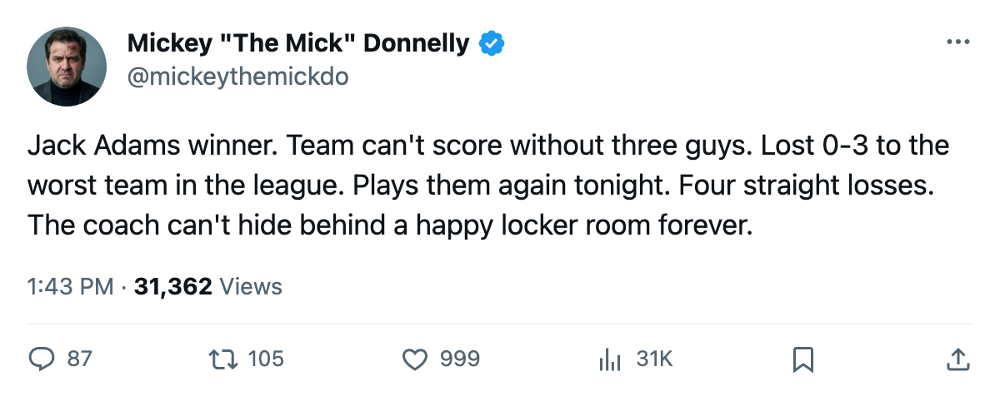
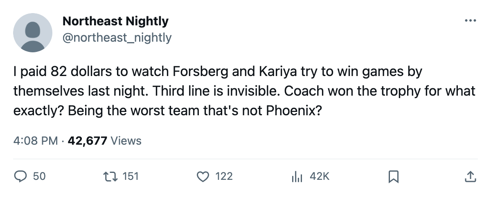

PHX
PHXJACK ADAMS WINNER. 0-3 TO THE WORST TEAM IN THE LEAGUE. PLAYS THEM AGAIN TONIGHT.
Granato's team has three 20-point players, $66.24M in payroll, and 18 points in the standings. Four straight losses. The fix is not coming.
 Mickey "The Mick" DonnellyColumnist, ex-goalie · The Penalty Box
Mickey "The Mick" DonnellyColumnist, ex-goalie · The Penalty Box
 Peter Forsberg89 carries a 95 in the Book. He's got 21 points at 23.2 minutes a night.
Peter Forsberg89 carries a 95 in the Book. He's got 21 points at 23.2 minutes a night.  Paul Kariya83 has 22 at an 89.
Paul Kariya83 has 22 at an 89.  Milan Hejduk82 has 21 at an 88. Three men with 64 points between them.
Milan Hejduk82 has 21 at an 88. Three men with 64 points between them.  Colorado Avalanche is 5-7-4, 18 points in 18 games, on a four-game losing streak, and the worst club in this league, 4-12-1 Phoenix, just shut them out 3-0.
Colorado Avalanche is 5-7-4, 18 points in 18 games, on a four-game losing streak, and the worst club in this league, 4-12-1 Phoenix, just shut them out 3-0.
They play again tonight.
The Jack Adams was a lie
Tony Granato won the Jack Adams last season. He's supposed to be the best coach in this league. His team has 43 goals for and 53 against. That's minus-10. His three best players scored 27 of those 43 goals between them. The other 14 skaters on his roster have 16 goals in 18 games. That's not a coaching problem about systems or structure. That's a roster that cannot score without its top line, and a coach who built that roster by hand.
The payroll is $66.24M. The price per point is $3.68M. Five clubs pay worse: Phoenix at $5.04M, Ottawa at $4.56M, San Jose at $4.14M, Buffalo at $4.10M, and Washington at $3.79M. Colorado pays like a club that wants to make the playoffs and produces like a club that's 6th in the worst-value club in this league.
The room is fine. The results are not.
Here's what makes this ugly instead of sad. Colorado's club morale sits at 95.7, fourth-best in this league. Nobody is unhappy. Nobody wants a trade. The players like Granato. They like the building. The front office made $24.38M per game watching this.
You can't blame the room. You can't blame the front office for spending wrong, because they spent big and spent on proven names. Forsberg is 95 in the Book. Kariya is 89. These are not development projects. These are finished products who produce and the team still loses.
The blame sits with the man behind the bench who won Coach of the Year and now can't get his club past Phoenix.
Four straight
The streak says L4. The last ten read as close to disaster as a 5-7-4 record can get. Three regulation losses, two overtime games, only two wins in that stretch. They're 3-6 at home in front of 14,603 people paying $82 a seat.
Tonight they play a Phoenix club that scored 35 goals in 18 games and gave up 52. That's the team that shut you out. That's the team that has the worst attendance in the league at 11,426 bodies. You cannot lose to this club twice in a row and still call yourself the Jack Adams winner.
What Granato built is a team where three men carry the goal-scoring load and the rest of the lineup skates. His top line plays 23 minutes. His third line has a 73 and a 75 buried at L3 and L4 while a 64 plays every special teams situation. That's not a mystery. That's the coach.
Colorado made the playoffs last year. They have one Cup appearance in their recent history, nothing else that matters. The window on Forsberg at 32 and Kariya at 31 doesn't open twice. Four straight losses and a 0-3 to Phoenix is the window closing.

